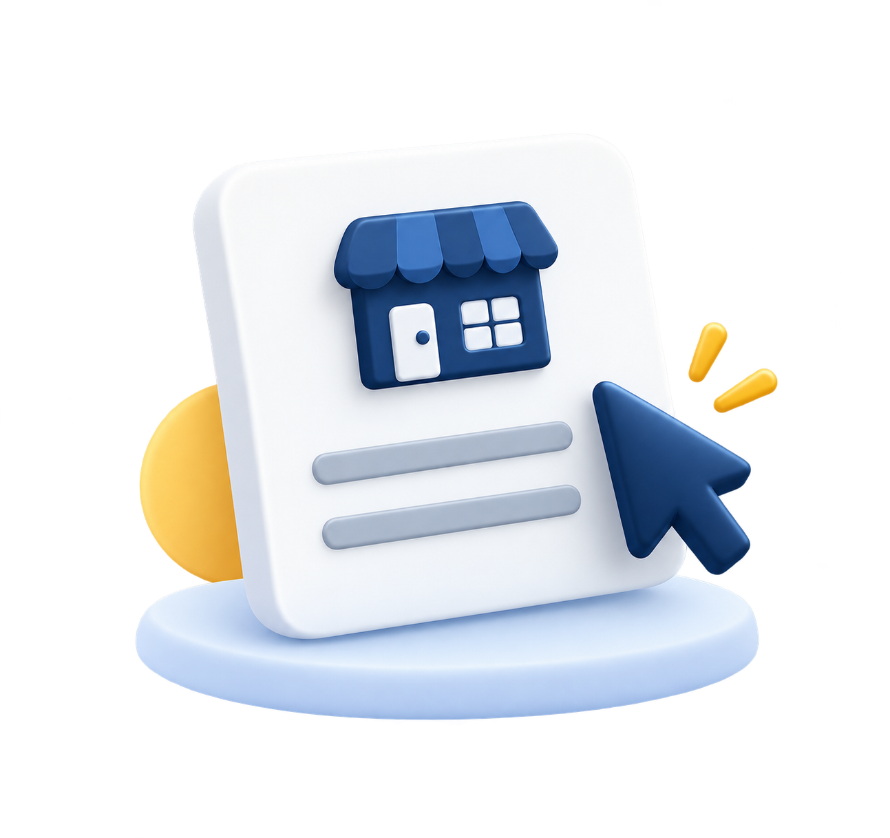

شارك الصفحة مع صاحب المطعم
خليه يتواصل معنا مباشرة ويذكر اسمك عند تقديم الطلب، وبعد موافقته نتابع معه.
عرّفنا على صاحب مطعم أو شارك رابط البرنامج معه. فريقنا يتولى التعارف، عرض المنتج، ومتابعة فرصة الشراكة.
رشّح مطعمًا الآن
طلبات · توصيل · ولاء · تكامل نقاط البيع
سواء تعرف صاحب المطعم شخصيًا أو تفضّل مشاركته الصفحة.
خليه يتواصل معنا مباشرة ويذكر اسمك عند تقديم الطلب، وبعد موافقته نتابع معه.
اكتب اسم المطعم وبيانات التواصل التي وافق صاحبها على مشاركتها، وسنتواصل معك لتنسيق الخطوة التالية.
ثلاث خطوات واضحة من التعارف إلى الاتفاق.
ابعث بياناتك واسم المطعم أو شارك رابط الصفحة مع صاحبه.
فريق Vision يتواصل للتعرف على احتياجات المطعم ويتابع طلب العرض.
نخبرك بتطور الترشيح وفق ما نتفق عليه، ونحدد شروط الشراكة كتابيًا إذا انطبقت.
خطوات البيع التي يتولاها فريق Vision.
نتأكد من صحة معلومات المطعم وملاءمة الخدمة.
نستمع لاحتياجاته ونستعرض كيف يمكن لفيجن أن تساعده.
عند موافقة المطعم، ننسّق الاتفاق والتشغيل حسب احتياجه.
رشّح مطعمًا آخر في شبكتك.
عرّفنا على المطاعم التي تتعامل معها.
لو تعرف صاحب مطعم قد يستفيد من Vision، ابعت لنا ترشيحك.
لا نعرض نسبة أو مبلغًا ثابتًا حاليًا. تتم مناقشة شروط أي مقابل وتوثيقها مع فريق Vision قبل بدء الشراكة.
لا، تقدر ترشّح مطعمًا سواء كنت عميلًا أم لا.
يراجع فريقنا البيانات ويتواصل معك لتأكيد التفاصيل والخطوة التالية.
نعم، اذكر كل مطعم وبياناته في رسالة منفصلة لتسهيل المتابعة.
يفضل أخذ موافقته أولًا، أو مشاركة رابط الصفحة معه ليختار التواصل مباشرة.